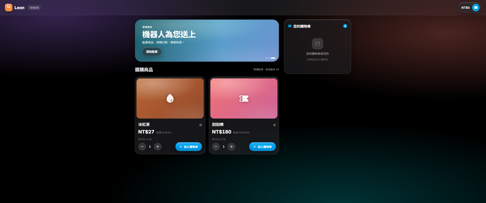
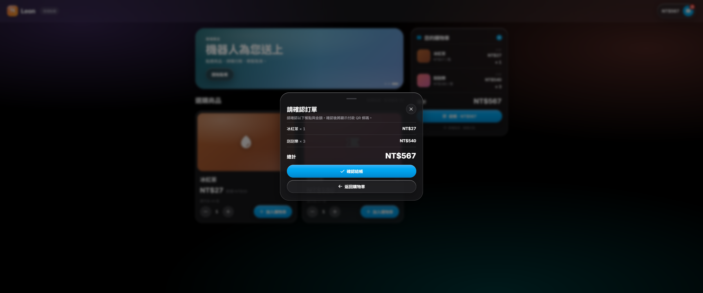
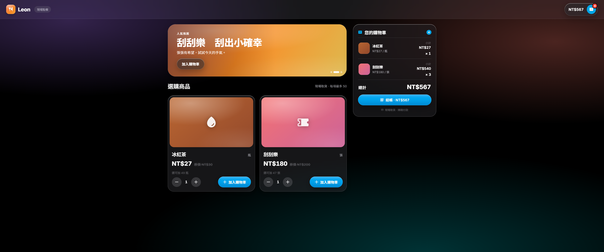
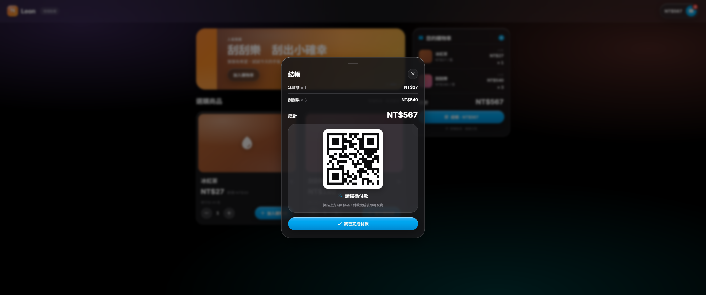
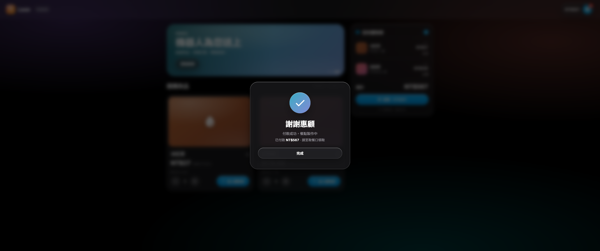

在零售與服務現場，「迎賓、介紹、點餐、結帳、送客」是一段高度重複、卻又需要即時互動的流程。本專題讓人形機器人擔任這個角色，探討如何在資源有限的嵌入式平台上，使機器人以自然的語音與觸控，與顧客完成一次完整而流暢的銷售互動。
具體而言，本專題在 Raspberry Pi 4 上實作一台互動式銷售輔助機器人：以 Hiwonder TonyPi 人形機器人站在攤位前，透過規則匹配（非大型語言模型）與顧客完成冰紅茶、刮刮樂兩項商品的點餐與收款模擬。系統核心是一個多層對話狀態機（L1 叫賣 → L2／L3 點餐 → L4 結帳掃碼 → L5 致謝），搭配語音合成（TTS）、語音辨識（STT，Deepgram Nova-3 串流）、機器人動作，以及一個即時鏡像到瀏覽器的玻璃風點餐畫面，支援語音與觸控雙模態操作。架構上業務邏輯嚴格不碰硬體、全靠回呼注入，使整套對話邏輯可在一般電腦上以 711 項 pytest 完整回歸；硬體與輸入輸出僅在入口層與四個背景 worker 接合。
值得一提的是，這套設計天生具備跨機型的適應力。由於對話邏輯與硬體以回呼注入嚴格解耦，銷售核心並不在意它驅動的是哪一台機器人——只要替換入口層的硬體轉接（動作組、語音合成、語音辨識與輸入來源），同一套對話狀態機、意圖辨識與購物車邏輯便能原封不動地搬到不同機型。因此本專案對小型與大型人形機器人的應用場域同樣適用、也能彈性適應：小至本專題採用的桌上型 TonyPi 這類教學與展示機器人，大至賣場、展館、櫃台等場域中與真人等高的服務型人形機器人，都能沿用同一套經 711 項測試驗證的「銷售大腦」，只需依場域更換周邊硬體與商品設定即可落地。
本報告依序說明系統的動機、整體架構、核心對話引擎、語音管線、前端雙模態互動，以及實機驗收成果。
近年人形機器人逐漸走入零售與服務場景。本專題設想一個擺攤銷售情境：由人形機器人 Hiwonder TonyPi 站在攤位前主動向往來顧客叫賣，並引導顧客完成點餐與結帳。
與直接串接大型語言模型（LLM）的對話系統不同，本系統刻意採用規則匹配（rule-based）的對話設計——意圖與數量以關鍵字比對與本地解析推導，對話決策本身不經雲端推論。這讓對話行為可預測、可控，且每一條規則都能被自動化測試覆蓋，適合課程專題在有限資源下穩定且可重現地展示。
系統要在 Raspberry Pi 4 上完成一段完整的銷售對話閉環：從叫賣招攬（L1）、點餐與數量確認（L2／L3）、結帳掃碼（L4）到致謝送客（L5）。
互動同時支援語音與觸控兩種模態：顧客可口說「我要一瓶冰紅茶」，也可在鏡像到瀏覽器的點餐畫面上直接觸控。另一項核心目標是可測試性——業務邏輯與硬體徹底解耦，使整套對話狀態機能在一般電腦上以自動化測試完整驗證，而非只能在實機上手動試。
展示商品聚焦兩項——冰紅茶與刮刮樂；結帳為掃碼付款的模擬（產生視覺化 QR 佔位，無真實金流）。需特別說明：雖然對話決策為本地規則匹配、不使用 LLM，但語音辨識（STT）與語音合成（TTS）仍仰賴雲端服務、需要網路連線；其中固定語句已預先快取、斷網亦可播放，動態語句則需連線即時合成。
系統已完成全部 L1–L5 對話層與語音、前端雙模態，並通過 711 項自動化測試與多輪 Raspberry Pi 實機驗收，達到可實地展示（demo-ready）的狀態。後續章節將依序說明整體架構、執行期並行模型、核心對話引擎、語音管線與前端鏡像。
在深入各子系統之前，本章先以一次完整的互動為例，描繪顧客從走近攤位到取得商品的整段旅程，建立全局印象。以下以「一位顧客點一瓶冰紅茶並完成結帳」為例。
顧客在鏡像到平板的點餐畫面上輕觸「開始點餐」，或直接對機器人說話。觸控請求經 WebSocket 上送，被翻譯成與終端按鍵相同的訊號、注入主線程的輸入佇列；機器人於是從「叫賣」轉入「點餐對話」。
進入點餐後，系統送出 ordering 畫面狀態，平板切到點餐主畫面；機器人同時以語音招呼、揮手致意——語音合成與肢體動作各自在背景執行緒並行，不阻塞對話。
顧客說「我要一瓶冰紅茶」。麥克風收音串流到雲端語音辨識，結果回注主線程，經意圖分類與商品解析後加入購物車；每加一筆，平板上的購物車就即時長出一項。
顧客說「結帳」，系統先跳出確認卡片請其確認品項與金額；確認後進入結帳狀態、顯示付款 QR 條碼。掃碼（本專題以觸控模擬）完成後轉入致謝。
系統送出 thankyou 畫面並帶入實付金額，平板顯示「謝謝惠顧」；機器人揮手道別，禮貌停頓後清空購物車、回到叫賣，等待下一位顧客。
下一頁以時序圖呈現同一段旅程的內部訊息流動，逐一展開上述各步驟背後的元件互動。
整個系統是單一程序：一條主線程跑純單線程的對話狀態機，所有會阻塞或需並行的工作（語音合成、語音辨識、機器人動作、網頁推送）都交給背景常駐執行緒，彼此以佇列與事件匯流排解耦。
最關鍵的設計鐵則是：業務邏輯（sales/）嚴格不碰硬體、廠商 SDK 與 I/O，一切對外動作都經由注入的回呼（callback）完成。硬體與輸入輸出只在入口層 main.py 與各 worker 接上。
機器人本體為 Hiwonder TonyPi，運算核心是 Raspberry Pi 4。Pi 上跑主程式並兼任網頁伺服器；麥克風為 ReSpeaker 陣列、動作經 TonyPi SDK 驅動、語音由喇叭播放，語音辨識走 Deepgram 雲端串流。
點餐畫面則由顧客端的筆電或手機瀏覽器渲染——因為 Pi 4 自身瀏覽器跑不動前端（GPU 與舊版 Chromium 不支援 OKLCH 色彩），Pi 只負責當伺服器、推送狀態（見圖 5 部署拓樸）。
程式碼分為六層：入口 main.py、廠商 vendor/、核心 sales/ 對話邏輯、web/ 顯示鏡像傳輸層、webui/ 前端，以及四個背景 worker。各層職責單一、依賴方向清楚（見圖 8 模組依賴）。


主線程只跑純單線程的對話狀態機；所有會阻塞或需並行的工作都交給背景常駐執行緒，透過佇列（queue）與事件匯流排（EventBus）與主線程解耦。
四個背景 worker：TtsWorker（語音合成）、ActionWorker（機器人動作）、InputReader（輸入）、SttWorker（語音辨識）；前三者常駐、STT 每輪收音時動態起停。如此機器人能邊說、邊動、邊聽而互不阻塞。
TtsWorker 與 ActionWorker 都是「FIFO 佇列 + daemon 執行緒 + 取出→處理→收尾」的消費者，這套骨架收斂在 QueueWorker 基底（右）。
▲ QueueWorker 消費者骨架（myProgram/queue_worker.py）：tts／action 共用

層與層之間的轉移由「世界狀態」——也就是購物車（cart）——驅動，而非動作歷史。dialog 層每一輪都即時依 cart 推導模式：cart 空＝詢問需求（L2）、cart 非空＝加單或結帳（L3）。
主線轉移：L1 叫賣 → dialog 點餐 → L4 結帳 → L5 致謝 → 回 L1。每一層是一個 State 類別，其 run() 回傳 Transition(next_state, enter_hawk)。
SalesMachine.run 是一個 while 主迴圈：進每層先 fail-fast 驗證 cart invariant（該空卻非空＝系統 bug 立刻爆），再 emit 網頁 phase，最後呼叫該層 run() 取得下一個轉移（右）。
▲ SalesMachine.run 主迴圈（myProgram/sales/states/machine.py）
除了 L1–L5 的主線轉移，系統還有五個「橫切」所有層的流程，處理取消、客服、結帳確認、自動結帳與數量追問——它們都遵循同一個錢包保守原則。
| 跨層流程 | 觸發 | 結果（保守 default） |
|---|---|---|
| 取消確認（6 秒） | 任何輸入點偵測到「拒絕」意圖 | 靜默／逾時 → 視為取消、退回叫賣 |
| 客服確認（24 秒） | 顧客在點餐／結帳喊「客服」 | 靜默／逾時 → 保守退出、清空購物車 |
| 結帳前確認 | L3 喊「結帳」 | 須明確答覆才進 L4（保護錢包） |
| C-2 自動結帳 | L3 逾時 12 秒／第 4 次「想一下」 | 倒數 6 秒三選一，取消優先 |
| 數量追問 | 加單缺數量／數量無效（>50 或 0） | 重問（逾時 12 秒、最多 3 次） |


麥克風為 ReSpeaker 六聲道陣列。收音以 arecord 取得六聲道原始音訊後，反交錯抽出 ch0——晶片預先處理過的 ASR 聲道——串流到 Deepgram Nova-3 雲端辨識。每一輪收音由主線程精確 arm／disarm 編排、用完即收線。
語音以 edge-tts 雲端合成，並用內容定址快取（以文字＋語者＋語速的雜湊為檔名）存下——固定語句只合成一次、之後永久命中，斷網也能播；播放當下還會預取下一句，句間靜默趨近於零。
意圖與數量以規則匹配的純函式推導，並有一層本地拼音近音糾錯把辨識錯的同音字校回商品名。意圖分類是「層別語意感知」的——同一個詞在不同層可有不同意義（如「不用」在 L3＝結帳、在 L2＝拒絕）。


機器人在每個狀態點送出一個「phase」與購物車快照，經事件匯流排跨執行緒推到 WebSocket、廣播給所有瀏覽器；前端收到後把 phase 折成對應畫面。畫面切換一律由後端 phase 驅動，前端不自行樂觀改畫面。
觸控按鈕只送出結構化命令，被翻譯成對話層既有的 token、注入同一條輸入佇列——於是對話邏輯完全不需為觸控改動，語音與觸控共用同一套流程。喚醒、點餐、結帳、付款都可任一模態完成。
連線中斷時前端指數退避重連、並立即退回歡迎畫面不凍結。介面採 Glaze 液態玻璃語彙；因 Pi 4 自身瀏覽器不支援其 OKLCH 色彩，畫面改由顧客端裝置渲染、Pi 專心當伺服器。






因為業務邏輯嚴格不碰硬體，整套 L0–L5 對話狀態機能在一般電腦上以 711 項 pytest 完整回歸——涵蓋意圖分類、數量解析、購物車上限、各跨層 confirm 與保守 default。每次改動對話邏輯都重跑這張回歸網。
對話之外的硬體與時序，則在 Raspberry Pi 上實機驗收：語音辨識（改抽 ch0 後大幅改善）、語音與觸控雙模態全鏈路、以及「點餐 → 數量上限 → 結帳 → 付款 → 服務下一位」的連續流程，皆通過實測。
| 驗收項目 | 方法 | 結果 |
|---|---|---|
| 對話邏輯回歸 | py -3.14 -m pytest（sales 回歸網） | 711 passed ✅ |
| 語音辨識準確度 | Pi 實機收音（ch0 聲道） | 大幅改善、可用 ✅ |
| 觸控全鏈路 | Pi 實機：喚醒→點餐→結帳→付款 | 通過 ✅ |
| 連續服務流程 | Pi 實機：點餐→上限→結帳→付款→次客 | 通過 ✅ |
| 斷網固定語音 | 內容定址快取命中 | 可離線播放 ✅ |
本專題在 Raspberry Pi 4 上完成一台規則匹配、語音與觸控雙模態的互動式銷售輔助機器人，涵蓋從叫賣、點餐、結帳到致謝的完整對話閉環。核心設計——業務邏輯與硬體徹底解耦——讓系統既能在實機穩定展示，又能以 711 項自動化測試持續驗證，是整個專題最重要的工程價值。
未來的演進將從規則匹配邁向 AI 驅動。語音端可導入神經網路 AEC，補足目前硬體回聲消除不足、難以即時搶話（barge-in）的限制；感知端可加入商品影像辨識，讓機器人以鏡頭直接認出攤位或顧客手中的品項；對話端則導入大型語言模型（LLM），把腳本化的規則匹配升級為能理解任意口語、應對各種銷售情境的智慧助理。
更進一步，可將整套軟體重構為一個 harness sales agent：以 harness 框架統一編排 LLM 與工具呼叫，使其能自主處理多樣的銷售任務。harness 的價值不只在能力，更在安全——它能約束 LLM 的輸出、防止幻覺與亂答，並為 agent 透過 tool／MCP／CLI 存取外部資料庫的行為設下權限與稽核邊界，兼顧顧客資料保密與系統安全。